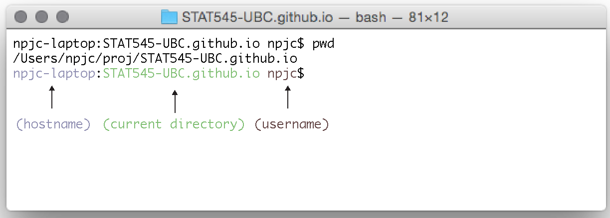

The Shell
What is the Shell?
A shell is an application; just like Microsoft Word or Google Chrome. All of them provide you with services. Word provides services to explore and interact with documents. Chrome provides services to explore and interact with others computers via the internet. Shell applications also provide these services (among many others). In Word and Chrome you interact with these services through a graphical user interface (GUI). By contrast, in a shell you tend to interact with services through a command line interface (CLI).
The relevant shell applications for us are Terminal on Mac, GitBash on Windows.
Think of the shell as a program on your computer who’s job is to run other programs. It is a very old program and in a time before the mouse this was the only way to interact with a computer (other than rewiring). It is still extremely popular among programmers because it is very powerful, fast, and can easily be set up to automate repetitive tasks.
Next, get started with a first exposure working in the shell.
Getting Started
In RStudio, go to Tools -> Shell; this opens a shell application in your current directory. Type pwd at the command line and press enter. Compare this to the output of getwd() in RStudio. Can you tell what the pwd command stands for? By default, RStudio opens the shell in your current working directory.

The command line has information about the hostname, the current directory and the username. You type commands at the prompt. Some commands require arguments. Most commands have options.
Now It’s time for a story about football. I like football and so every year when the Super Bowl comes around I watch it with friends. This used to be very stressful. It’s the roman numerals. I just can never seem to read them right. So every year I’d google say “roman numeral XLVIII” to decipher it. But then I learned more terminal and all my worries were solved:
npjc-laptop:STAT545-UBC.github.io npjc$ say "Super Bowl XLVIII"Here give the
saycommand the argument (in the form of a quoted string): “Super Bowl XLVIII” and press enter to execute and voila! If you have a Mac try this for yourself to see what happens! Typeman sayto see the manual, what else can you do? If you don’t have a Mac find a friend and learn together!
Next explore other commands beyond say and pwd (for print working directory) to navigate the file system.
A few tips
- You can drag and drop a file or folder into the shell to the path to that file or folder.
- press tab for auto-completion. What happens when you do it twice in succession?
- press ctrl+c to abort a command and return to the prompt.
- use the arrow keys to navigate your execution history.
- ctrl+a to move cursor to the start of a line. What does ctrl+e do?
Now go explore the git suite:
Take a look at the commands below, What’s the command, option and argument for each?
$ git config --global user.name "YOUR_FULL_NAME"
$ git config --global user.email "YOUR_EMAIL_ADDRESS"git is actually a suite of commands. The git command takes, as an argument, the name of a command within the suite. You always first type “git[space]command”.
You can see the most common git commands with:
$ git --help| git command | description |
|---|---|
| add | Add file contents to the index |
| bisect | Find by binary search the change that introduced a bug |
| branch | List, create, or delete branches |
| checkout | Checkout a branch or paths to the working tree |
| clone | Clone a repository into a new directory |
| commit | Record changes to the repository |
| diff | Show changes between commits, commit and working tree, etc |
| fetch | Download objects and refs from another repository |
| grep | Print lines matching a pattern |
| init | Create an empty Git repository or reinitialize an existing one |
| log | Show commit logs |
| merge | Join two or more development histories together |
| mv | Move or rename a file, a directory, or a symlink |
| pull | Fetch from and integrate with another repository or a local branch |
| push | Update remote refs along with associated objects |
| rebase | Forward-port local commits to the updated upstream head |
| reset | Reset current HEAD to the specified state |
| rm | Remove files from the working tree and from the index |
| show | Show various types of objects |
| status | Show the working tree status |
| tag | Create, list, delete or verify a tag object signed with GPG |
Useful reference:
want more shell?
- See Appendix 3 from the practical computing for biologists book.
- A-Z index of bash command line for linux